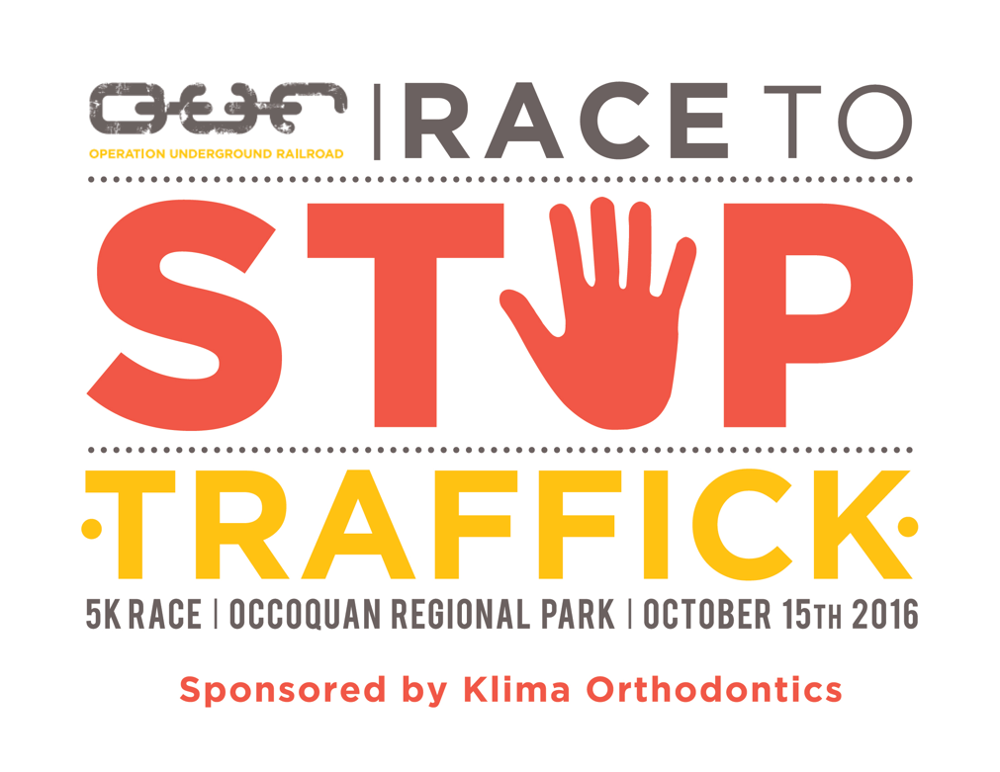

Schedule
8:00 am Check in and packet pick up9:00 am The 1 Mile Fun Run begins9:30 am The 5k race beginsDrinks and snacks and family-friendly activities will be provided after the race.
Location
Occoquan Regional Park9751 Ox Road, Lorton, VAin the big field next to the parking lot.The parking lot will be clearly marked and parking is free.
Pricing
Early bird pricing is $25 for the 5k, $15 for the 1 mile fun run, and $20 for a virtual run. Discounted pricing for teams of five or more people is available. Capacity is limited. Register now!
When is the race?
The event will be held on Saturday, October 15, 2016 at 9 am, at Occoquan Regional Park in Northern Virginia.
How long is the race?
There will be a 1 mile Fun Run, and an officially timed 5K.
What do I get for participating?
All participants will receive a t-shirt, tasty snacks to refuel and family friendly activities after the run.
Are pets allowed?
Unfortunately we cannot accomodate pets at this event. Please do not bring them.
I’d like to come but I can’t. What should I do?
For abolitionists who want to participate in the liberation efforts but aren’t local, we’re doing a Virtual Run! Run a 5K on your own anytime between October 1st and October 17th, post a picture of you during/after the run with the hashtag #ourracetostoptraffick and we’ll mail you a t-shirt too!
